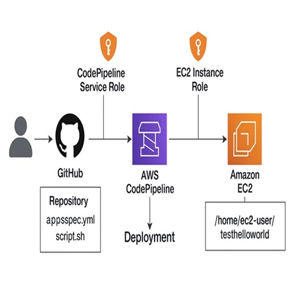

Hands-on – AWS Cloud Projects 🚀
Leveraging practical knowledge of cloud technologies to design and deploy scalable, secure, and cost-optimized infrastructure solutions.
Here are some of my key projects that showcase my expertise in AWS cloud solutions, including VPC deployments, secure architectures, and legacy migrations.
Each project highlights my ability to design, implement, and manage cloud environments effectively.

Project 1
Automated EC2 Deployment Pipeline Using AWS CodePipeline and GitHub.
- This project outlines an automated deployment pipeline using AWS CodePipeline, CodeDeploy, and GitHub to deliver application scripts to Amazon EC2 instances. This solution enables continuous delivery from a GitHub repository to Amazon EC2 instances with zero manual deployment steps.
- The GitHub repository contains two critical files: These files are packaged together and passed through our deployment pipeline automatically. The compute layer has EC2 instances configured with AmazonSSMManagedInstanceCore for secure Systems Manager access and Inline policies that grant s3:GetObject access to retrieve artifacts.
- AWS CodePipeline orchestrates the flow - The CodePipeline service role has been updated with the required IAM permissions to integrate with GitHub, S3, CloudWatch Logs, and CodeDeploy. CodeDeploy: Locates the EC2 targets and deploys files to /home/ec2-user/testhelloworld and executes script.sh using the AfterInstall hook.
- From the user’s perspective, the process is seamless:- Within minutes, the latest changes are deployed securely and automatically to production. This architecture enables secure, auditable, and repeatable deployments using AWS-native tools and promotes best practices in continuous delivery.
Click on the Learn more button below to view the project details and implementation steps.

Project 2
Deploying a Secure 3-Tier Architecture in AWS.
A practical implementation of a three-tier web architecture using Amazon VPC, EC2, RDS, and Load Balancer. This project focuses on high availability, network isolation, and secure access between tiers.
Project 3
Project 3: Migrating a Legacy Architecture to AWS.
This project involves migrating a legacy architecture to AWS, focusing on re-architecting for cloud-native services, optimizing costs, and ensuring data integrity during the migration process.
It outlines a step-by-step process for analyzing, planning, and migrating legacy infrastructure to the AWS Cloud. It covers rehosting (lift-and-shift), storage migration, and network configuration for minimal downtime.